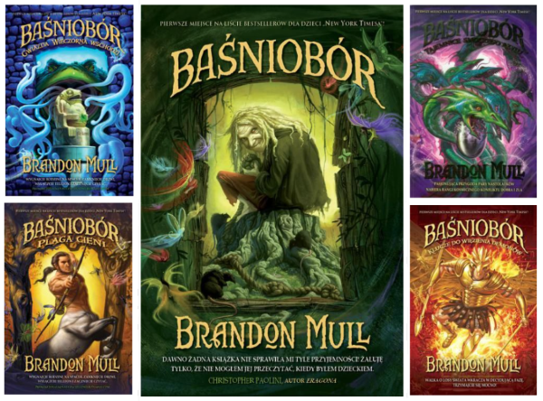
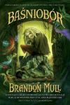

„Baśniobór” (ang. *Fablehaven*) to seria książek autorstwa Brandona Mulla. Pierwszy tom ukazał się w Stanach Zjednoczonych 30 lipca 2006 roku, a polscy czytelnicy mieli okazję sięgnąć po niego w 2011 roku. Seria doczekała się kontynuacji w postaci pięcioczęściowego cyklu zatytułowanego „Smocza Straż”.
Seria książek *Baśniobór* przedstawia losy rodzeństwa Kendry i Setha, którzy podczas wyjątkowych wakacji u dziadków odkrywają niezwykłą tajemnicę. Okazuje się, że ich dziadkowie są strażnikami magicznego rezerwatu o nazwie Baśniobór – jednego z wielu takich miejsc rozsianych po całym świecie. Nastolatkowie, wspierani przez nowo poznanych sojuszników, muszą zmierzyć się z licznymi zagrożeniami, aby zachować równowagę między siłami dobra i zła.